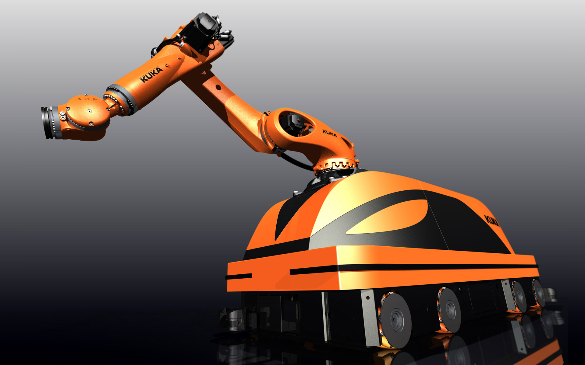
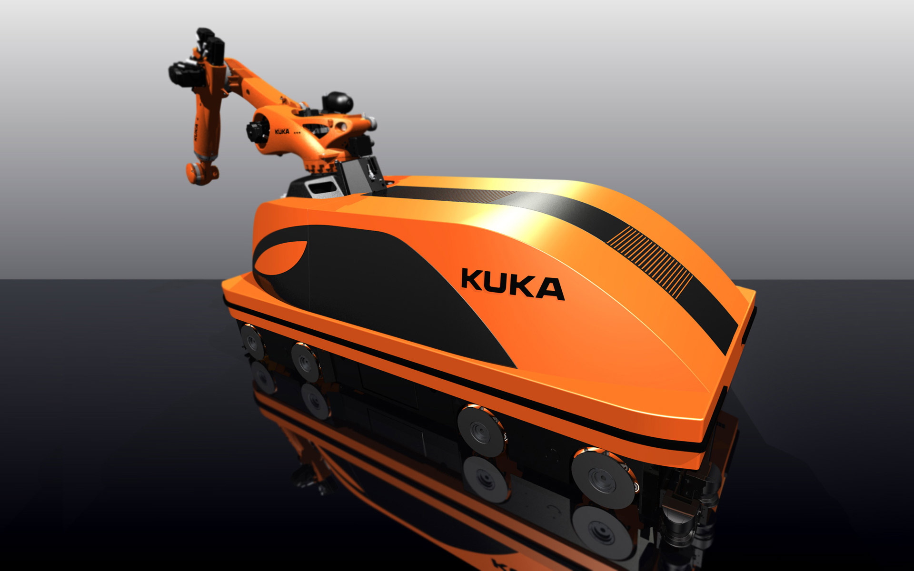
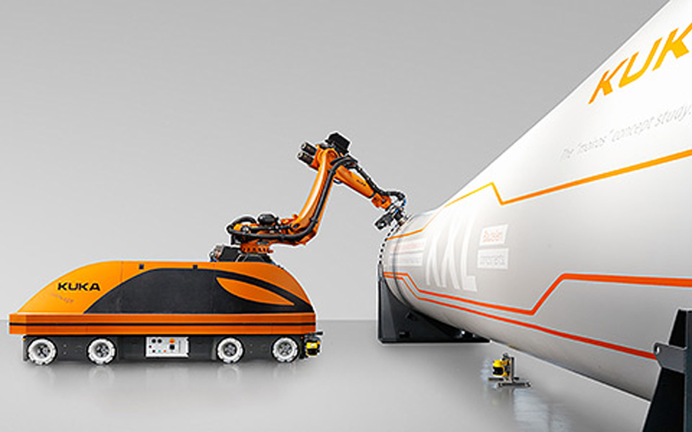
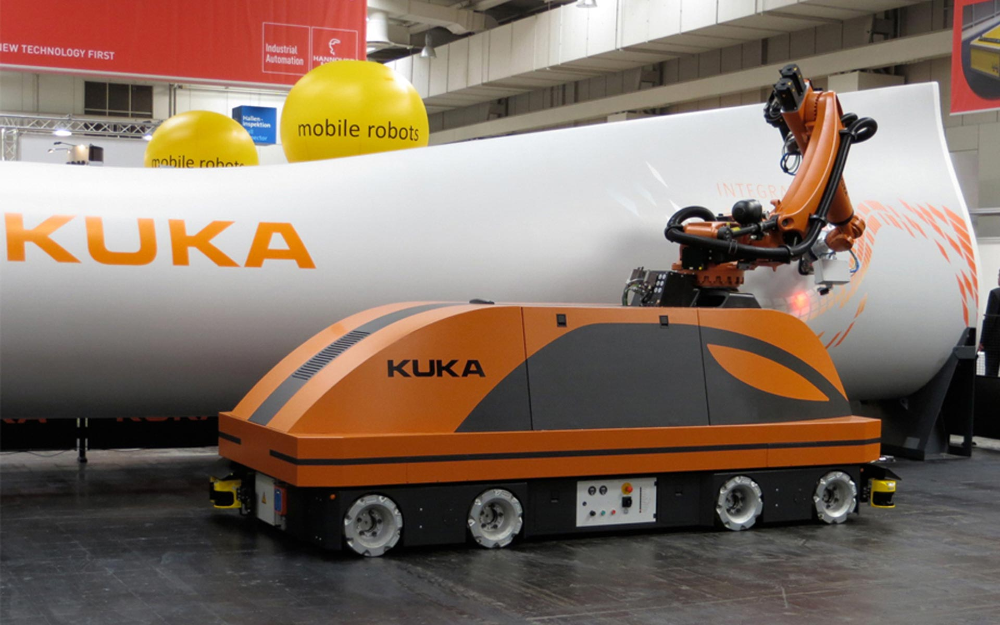

KUKA Mobile Robotics
Mobile Robotics
KUKA Mobile Robotics
Mobile Robotik
Incited by the vision that robots can move absolutely autonomously and support humans at their work,
KUKA
develops mobile robot platforms in different sizes.
The KUKA Moiros consists of a robot of the Quantec class which is mounted on a KUKA omniMove platform and
can be used for the most different fields of application together with the help of an autonomous
navigation software package. This unit is convincing by impressive flexibility and high practical
relevance by which all sorts of tasks become conceivable. Even a combination from most different
applications is practicable.
The KUKA omniRob is the synthesis from a lightweight construction robot and a medium mobile platform
size. This technological demonstrator makes absolutely sure that it doesn't collide with any obstacle.
Due to the safety precautions, people may operate close to the omniRob.
Selić Industriedesign service: Design concept, design consultation, design sketches, CAD design support,
CAD freeform modeling, design refinement, processing of design data for the engineering department
Angetrieben von der Vision, dass sich Roboter völlig autonom bewegen und die Menschen bei ihrer Arbeit
unterstützen können, entwickelt KUKA mobile Roboterplattformen in verschiedenen Größen.
Der KUKA Moiros besteht aus einem Roboter der Quantec-Baureihe, der auf einer KUKA omniMove-Plattform
montiert ist und mit Hilfe einer autonomen Navigationssoftware für verschiedenste Aufgabengebiete
eingesetzt werden kann. Dieses Gesamtsystem überzeugt durch außergewöhnliche Flexibilität und hohe
Praxisrelevanz, wodurch die unterschiedlichsten Anwendungen denkbar werden. Selbst eine Kombination aus
verschiedensten Aufgaben ist realisierbar.
Der KUKA omniRob ist die Synthese aus einem Leichtbauroboter und einer mittleren mobilen Plattformgröße.
Dieser Technologiedemonstrator stellt absolut sicher, dass er mit keinem Hindernis kollidiert. Aufgrund
der Sicherheitsvorkehrungen dürfen Menschen in unmittelbarer Nähe zum omniRob agieren.
Selić Industriedesign Dienstleistung: Designkonzept, Designberatung, Designentwürfe, CAD-Design
Unterstützung, CAD-Freiform-Modellierung und Detailgestaltung, Aufbereitung von Designdaten für die
Konstruktion




Renderings © Selić Industriedesign
Images © KUKA Roboter GmbH